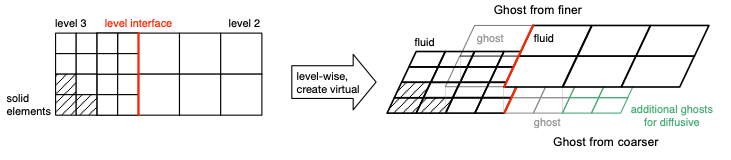
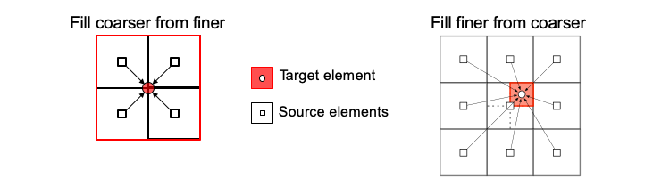

The idea of multi-level meshes is to increase the resolution only in regions of special interest. By means of the local refinement only where it is really necessary, a lot of memory and compute time can be saved. To maintain physics, the macroscopic quantities have to be constant across the different levels. Therefore the pdf has to be scaled for space and time separately, in order to transfer it from one level to other. This can be achieved by linear or quadratic interpolation of the PDF and the use of so called ghost elements. For a better understanding is it visualized in the following figure:

The ghost elements are introduced at the level interface, which is the intersecting line between two elements of different size. They aim to imitate the neighbor elements that are missing on the same level and obtain their values from the aforementioned interpolation from coarser to finer element and vice versa.
Note
Target elements are the ghost elements, which have to be filled with valid values. Source elements are the fluid elements from other levels.
When using multi-level we need to interpolate between the different level of
our mesh. When we fill the coarser from finer elements we can use an average
overall elements. To fill the finer elements from coarser is a bit more
complicated. We use different methods to compute the finer elements. By
default, we use the most accurate method: quadratic interpolation. If we do
not have enough elements for a quadratic interpolation, we fall back to linear
interpolation. Here again, if not enough elements are provided we drop down to
weighted average. By changing the interpolation method inside the Musubi
config file you can restrict the toplevel interpolation to your chosen
interpolation method.

Quadratic interpolation based on the compute stencil.
Linear interpolation of the first two moments (density and momentum) and separation of equilibrium and non-equilibrium part to account for correct shear stress calculation. This fine->coarse interpolation method is based on Dazhi Yu et. al. (2002): "A multi-block lattice Boltzmann method for viscous fluid flows". The basic idea is to split up the source pdfs into equilibrium- and non-equilibrum- parts, then interpolate both parts with average interpolation, and apply a corrective scaling factor to the non-equilibrium part before adding both parts up and writing it to the target element. Values are interpolated in a linear fashion by multiplying the quantities of the source elements by weighting factors, which were determined in compute_weight completing the fromCoarser dependencies in terms of the distance of the source element's barycenters from the target element's barycenters.
Simple averaging of all quantities with weighted summation.
Default is linear_distance.
The weights can be computed by:
linear_distance
inverse_distance
modified_shepards
with:
Note
Only one weighting method can be chosen at runtime.
If one want to specify a special interpolation method, or special
configurations for a special method you can do so by adding the
interpolation_method table to your config file. If no table is given,
defaults are:
method = 'quadratic'weights_method = 'linear_distance'inverse_distance_powerfac = 6 interpolation_method = {
-- Supported methods:
-- weighted_average, linear, quadratic, compact
method = 'quadratic',
-- Supported weights method:
-- inverse_distance, linear_distance, modified_shepards
weights_method = 'inverse_distance',
-- for inverse_distance:
inverse_distance_powerfac = 6
}